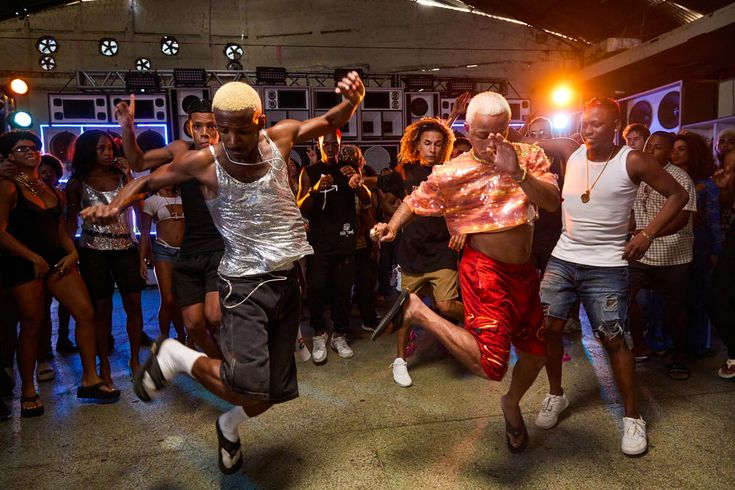

DJ Marlboro
Um dos principais responsáveis pela consolidação do funk carioca e pela produção de músicas com batidas eletrônicas brasileiras.
Referência: Funk Brasil (1989).
Das festas de soul aos bailes das comunidades: a transformação de um ritmo em identidade cultural.
DESCOBRIR AS ORIGENSO funk brasileiro possui influências da música negra norte-americana, especialmente do soul, do funk dos Estados Unidos e, posteriormente, do Miami Bass. Durante a década de 1970, os bailes black ganharam popularidade no Rio de Janeiro, reunindo principalmente jovens negros das periferias.
Essas festas ficaram associadas ao movimento Black Rio, que valorizava a identidade negra, a dança e a música. Nos anos 1980, o Miami Bass, com suas batidas eletrônicas e graves marcantes, passou a influenciar os DJs brasileiros.
Na década de 1990, o ritmo desenvolveu uma identidade própria, com letras em português, batidas produzidas eletronicamente e temas ligados ao cotidiano das comunidades. Assim se consolidou o funk carioca como um estilo musical brasileiro.
Um dos principais responsáveis pela consolidação do funk carioca e pela produção de músicas com batidas eletrônicas brasileiras.
Referência: Funk Brasil (1989).
Dupla que popularizou o funk melody, com músicas românticas e grande sucesso nacional.
Obra: Nosso Sonho.
Conhecidos por músicas que retratavam o cotidiano das comunidades cariocas.
Obra: Rap das Armas.
Não um artista em si, porém uma produtora que impulsionou o reconhecimento do funk nos anos 90 e 2000.
Obra: Cerol na Mão.
Ao longo dos anos, o funk desenvolveu diferentes vertentes. Cada uma apresenta características sonoras e culturais próprias.


O funk representa muito mais que um gênero musical. Ele é uma manifestação cultural das periferias, envolvendo dança, moda, linguagem, produção musical e identidade social. Apesar do preconceito e da criminalização enfrentados ao longo de sua história, conquistou espaço no cenário musical brasileiro e internacional.